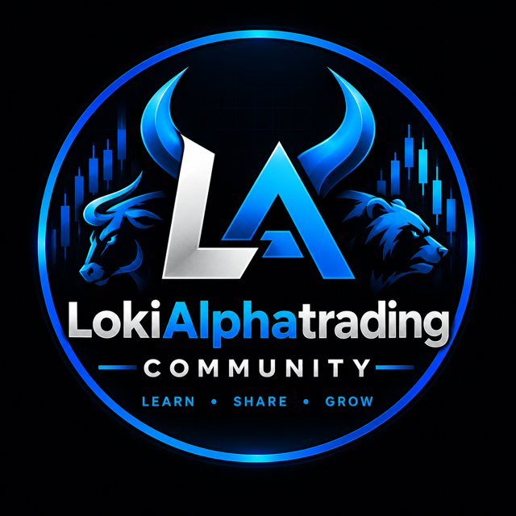

APRENDE • COMPARTE • CRECE
LokiAlphatrading Community
Tres reportes cada día de mercado: el Matutino antes de la apertura, el Meridiano al mediodía y el Closing al cierre. Noticias, futuros del NQ/ES y stocks, con niveles claros y resultados honestos.
Cargando el último reporte…
Nuestros canales
Cada reporte se resume en tres grupos de la comunidad.